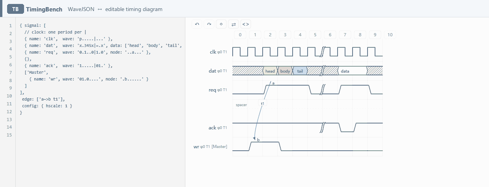

TimingBench draws your timing diagram from a simple textual description — the WaveJSON format used by WaveDrom. Unlike a plain renderer, the picture is editable: change the source and the waveform redraws; click a cell and the source is written back. The two are the same data in two views.
Static. Build-free. Dependency-free. Embeddable on any page.
Live, not a recording. This is the real embed running on this page, showing
the same document the editor opens with — read-only until you click it. Click a cell,
pick a character, double-click to type in place, or press Esc to go back to viewing.

Esc goes back to viewing.
<script src="https://udarent.github.io/TimingBench/embed.js"></script>
<div data-timingbench data-height="240"
data-wavejson='{ signal: [ { name: "clk", wave: "p....." } ] }'></div>
Two lines, no build step. The card runs in its own iframe, so your CSS can't leak in and its styles can't leak out. For programmatic control and change events, see the embed demo and the README.